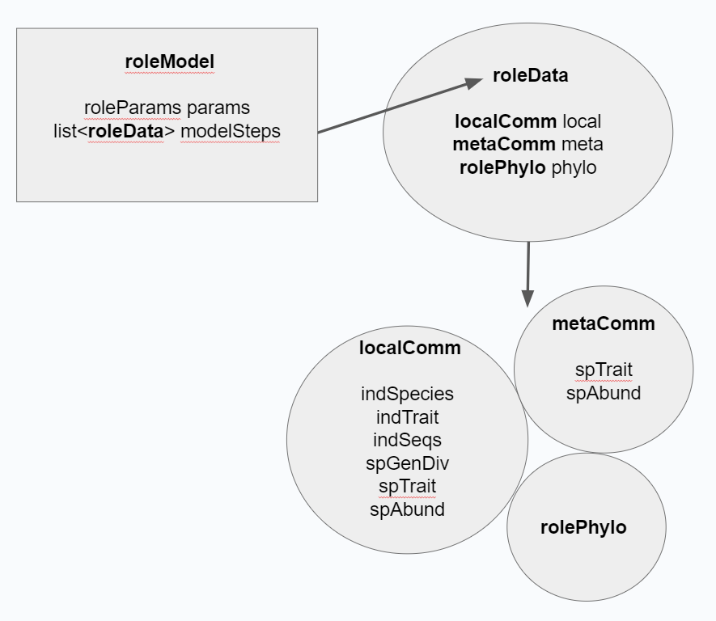
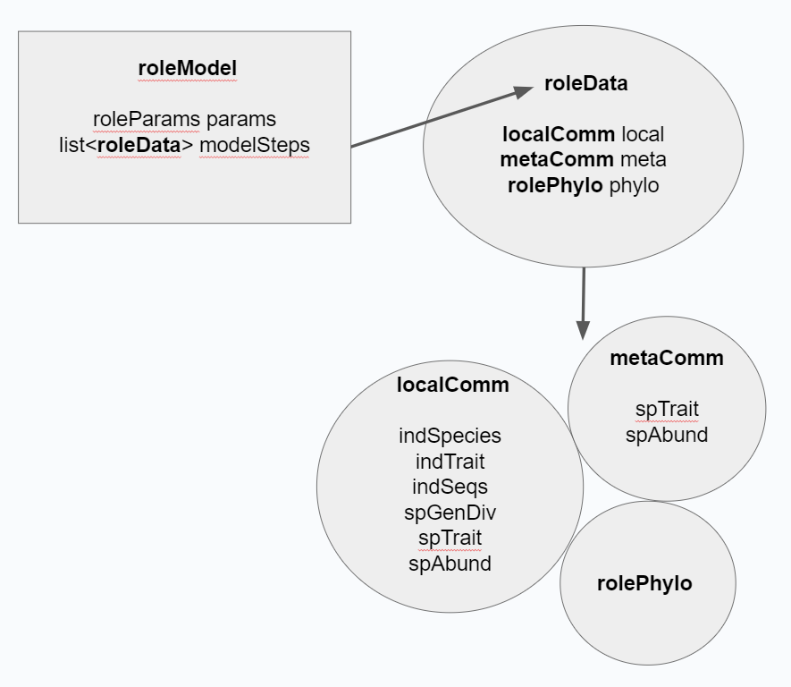

knitr::include_graphics("components.png")
Next we will examine what the components of the RoLE model are, what each means biologically, and how to access them within roleR’s classes and structure.
A local community is an assemblage of interacting species that occur in the same location and ecosystem. For example given a series of islands where each has just one type of habitat and no barriers, each could be considered a different local community.
The ‘localComm’ class in roleR stores the state of what species are present in local community, their abundances and genetic sequences, and what traits individuals have. Then we can simulate how this community changes over time.
The ‘localComm’ slots ‘indSpecies’, ‘indTrait’, and ‘indSeqs’ are vectors containing species IDs, traits, and sequences for each individual.
We can access an individual’s information by indexing these vectors. for example given a ‘localComm’ called my_local, my_local@indSpecies[2] is the ID of the species of individual 2, and my_local@indSeqs[5] is the genetic sequence of individual 5.
The ‘localComm’ slots ‘spAbund’, ‘spTrait’, and ‘spGenDiv’ are vectors contain the abundance (number of individuals), average trait value, and genetic diversity of each species. (how is genetic diversity calculated?)
Just like with the individual-level vectors, we can access species information by indexing. For example given a ‘localComm’ called my_local, my_local@spAbund[2] is the abundance of species 2, and my_local@spTrait[5] is the mean trait value of all living individuals of species 5.
A metacommunity is a group of local communities linked by dispersal (immigration) of organisms between them.
The ‘metaComm’ class in roleR contains the abundances and traits of each species in the metacommunity. This can be understood as describing the species that occur outside our focal ‘localComm’ local community but have the capacity to disperse (immigrate) to it. Species with higher abundance in the metacommunity are more likely to disperse to our local community.
Because ‘metaComm’ contains only species and not individuals it only has vectors that are species-indexed.
For example given a ‘metaComm’ called my_meta, my_meta@spAbund[2] is the abundance of species 2, and my_meta@spTrait[5] is the mean trait value of all living individuals of species 5.
The roleR phylogeny class ‘rolePhylo’ contains the phylogenetic relationships between all the species in the local community AND the metacommunity.
It contains various slots that you can access, but you will almost always be better off coercing it to the ‘phylo’ class of the R package ‘ape’. Given a ‘rolePhylo’ called ‘phy’ and with the ‘ape’ package loaded, you can coerce it using phy <- as(phy,‘phylo’).
We have seen how the local community ‘localComm’, the metacommunity ‘metaComm’, and the phylogeny ‘rolePhylo’ work together to represent the state of our model system. For bookkeeping, we hold them together in a ‘roleData’ object, which has slots ‘local’, ‘meta’ and ‘phylo’.
Finally, because we want to understand not just the end state of a simulated process, but also how it has changed over time, we store each progressing ‘roleData’ state of the model in a list within the ‘roleModel’ class. The diagram below describes this structure.
knitr::include_graphics("components.png")